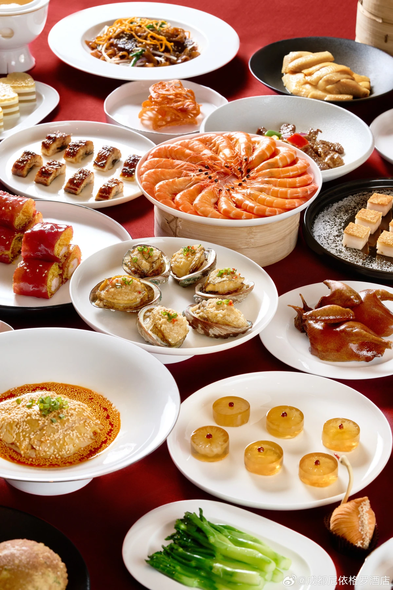

广式美食
品味广州独特的美食文化，从精致的早茶点心到地道的烧腊卤味，每一道菜都展现了粤菜的精髓。
精选美食
{{ food.category === 'dimsum' ? '早茶点心' : food.category === 'roast' ? '烧腊卤味' : food.category === 'specialty' ? '特色小吃' : '甜品糕点' }}
{{ food.name }}
{{ food.description }}
{{ tag }}
没有找到美食数据
请稍后再试或联系网站管理员
广式美食文化
粤菜是中国八大菜系之一，以鲜、嫩、滑、爽、香、脆为特点，讲究清而不淡，鲜而不俗，嫩而不生，油而不腻。广州作为粤菜的发源地之一，拥有丰富多样
广式美食文化历史悠久，可追溯至两千多年前。早茶文化是广州饮食文化的重要组成部分，"食在广州"的说法闻名遐迩。广州人喜爱饮茶，不仅是为了解渴，更是一种社交和休闲方式。
除了早茶，广州还有许多特色小吃和名菜，如肠粉、云吞面、烧鹅、白切鸡等。这些美食不仅口味独特，还蕴含着丰富的文化内涵，是广州文化的重要象征。
